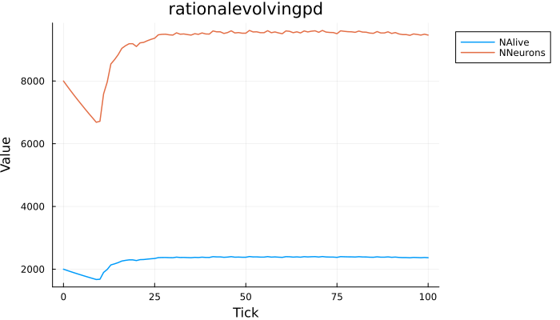
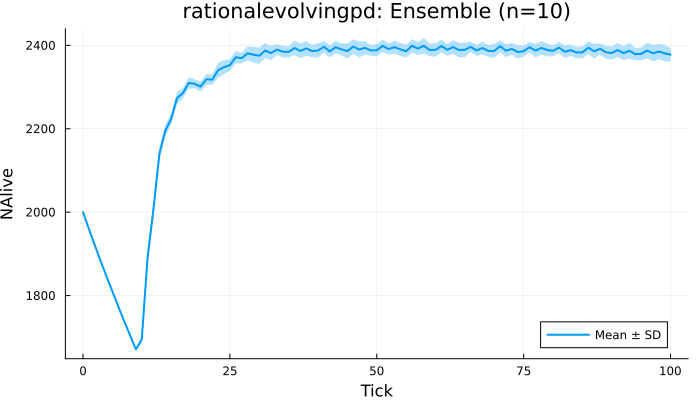
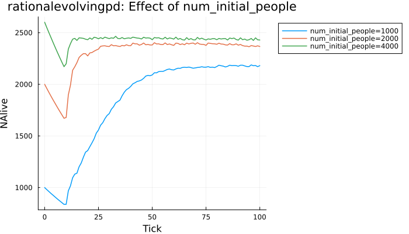

Rational Evolving PD
Overview
This vignette demonstrates the Rational Evolving PD model implemented in ArkModelZoo.jl using the Ark.jl ECS framework.
Parameters
| Parameter | Type | Default | Description |
|---|---|---|---|
grid_size | Int | 51 | grid size |
num_initial_people | Int | 2000 | num initial people |
people_birth_energy | Float64 | 12.0 | people birth energy |
energy_cost_per_person | Float64 | 0.6 | energy cost per person |
people_birth_threshold | Float64 | 36.0 | people birth threshold |
relative_genetic_variation | Float64 | 50.0 | relative genetic variation |
max_brain_size | Int | 4 | max brain size |
resource_competition | Float64 | 0.0 | resource competition |
best_competition | Int | 2 | best competition |
forgetfulness | Float64 | 0.25 | forgetfulness |
energy_cost_per_neuron | Float64 | 0.0 | energy cost per neuron |
payoff_CC | Float64 | 3.0 | payoff CC |
payoff_CD | Float64 | 0.0 | payoff CD |
payoff_DC | Float64 | 5.0 | payoff DC |
payoff_DD | Float64 | 1.0 | payoff DD |
emo_CC | Float64 | 3.0 | emo CC |
emo_CD | Float64 | 0.0 | emo CD |
emo_DC | Float64 | 5.0 | emo DC |
emo_DD | Float64 | 1.0 | emo DD |
max_ticks | Int | 100 | max ticks |
Source Code
The Julia code to run this model:
using ArkModelZoo
_, trajectory = run_rationalevolvingpd()Time Series

Ensemble Runs
Ten replicates with different random seeds, showing mean ± standard deviation.

Parameter Sensitivity
Varying num_initial_people.

Appendix: Source Code
This model is implemented in the Ark.jl Entity-Component-System (ECS) framework. The code is split into five files, each with a distinct role:
- Parameters: a mutable struct holding all configurable values.
- Components: lightweight data types attached to individual entities (agents).
- Resources: world-level shared state accessible to all systems.
- Systems: functions that operate on entities each tick, defining model behavior.
- Model: wiring that assembles the world, registers resources and systems, and provides the run entry point.
Parameters (parameters.jl)
The parameter struct uses @kwdef so that every field has a default value and can be overridden by keyword. These defaults match the original NetLogo model’s slider settings.
Base.@kwdef mutable struct REPDParams
grid_size::Int = 51
num_initial_people::Int = 2000
people_birth_energy::Float64 = 12.0
energy_cost_per_person::Float64 = 0.6
people_birth_threshold::Float64 = 36.0
relative_genetic_variation::Float64 = 50.0
max_brain_size::Int = 4
resource_competition::Float64 = 0.0
best_competition::Int = 2
forgetfulness::Float64 = 0.25
energy_cost_per_neuron::Float64 = 0.0
# Payoff matrix: [C vs C, C vs D; D vs C, D vs D] = [3, 0; 5, 1]
payoff_CC::Float64 = 3.0
payoff_CD::Float64 = 0.0
payoff_DC::Float64 = 5.0
payoff_DD::Float64 = 1.0
# Emotion matrix defaults (same as energy matrix initially)
emo_CC::Float64 = 3.0
emo_CD::Float64 = 0.0
emo_DC::Float64 = 5.0
emo_DD::Float64 = 1.0
max_ticks::Int = 100
seed::Int = 42
endComponents (components.jl)
Components are lightweight data types attached to individual entities (agents). Mutable structs hold per-entity state, while empty tag structs act as markers for the ECS query system to efficiently filter entities.
struct REPDDummy endResources (resources.jl)
Resources are world-level singletons shared across all systems, used for global state and aggregate statistics.
mutable struct REPDState
width::Int
height::Int
n_patches::Int
alive::Vector{Bool}
energy::Vector{Float64}
# Emotion matrix per patch: 2×2 stored as 4 values [CC, CD, DC, DD]
emo_matrix::Matrix{Float64} # n_patches × 4
# Neurons: imprint utility per event pattern, n_patches × 4
# Event patterns: [C,C]=1, [C,D]=2, [D,C]=3, [D,D]=4
neuron_imprint::Matrix{Float64} # n_patches × 4
counter::Vector{Int}
partner::Vector{Int} # 0 = no partner
current_event::Vector{Int} # last event pattern index (1-4), 0=none
my_move::Vector{Int} # 0=defect, 1=cooperate
played::Vector{Bool}
score::Vector{Float64}
end
function REPDState(w::Int, h::Int)
n = w * h
REPDState(
w, h, n,
fill(false, n),
zeros(Float64, n),
zeros(Float64, n, 4),
zeros(Float64, n, 4),
zeros(Int, n),
zeros(Int, n),
zeros(Int, n),
zeros(Int, n),
fill(false, n),
zeros(Float64, n),
)
end
mutable struct REPDStats
n_alive::Int
n_neurons::Int
end
REPDStats() = REPDStats(0, 0)Systems (systems.jl)
Systems contain the model logic and execute in a defined order each tick. Each system struct implements either initialize! (run once at setup) or update! (run every tick).
# --- Helper: get Von Neumann neighbors (non-wrapping) ---
function _repd_neighbors(idx::Int, w::Int, h::Int)
x = mod1(idx, w)
y = (idx - 1) ÷ w + 1
nbs = Int[]
if x > 1; push!(nbs, idx - 1); end
if x < w; push!(nbs, idx + 1); end
if y > 1; push!(nbs, idx - w); end
if y < h; push!(nbs, idx + w); end
return nbs
end
# Event pattern index: CC=1, CD=2, DC=3, DD=4
@inline function _event_idx(my_move::Int, partner_move::Int)
return my_move * 2 + partner_move + 1
# C=1,D=0: CC → 1*2+1+1=4... let me fix:
# my_move: 1=C, 0=D; partner: 1=C, 0=D
# We want: CC=1, CD=2, DC=3, DD=4
end
# Actually let's use: (my_move, partner_move) both 0 or 1
# CC(1,1)=1, CD(1,0)=2, DC(0,1)=3, DD(0,0)=4
@inline function _repd_event_idx(my::Int, partner::Int)
if my == 1 && partner == 1; return 1; end
if my == 1 && partner == 0; return 2; end
if my == 0 && partner == 1; return 3; end
return 4
end
# Payoff lookup: my_move (0=D,1=C) vs partner_move (0=D,1=C)
@inline function _repd_payoff(params::REPDParams, my::Int, partner::Int)
if my == 1 && partner == 1; return params.payoff_CC; end
if my == 1 && partner == 0; return params.payoff_CD; end
if my == 0 && partner == 1; return params.payoff_DC; end
return params.payoff_DD
end
# --- Initialization ---
struct InitREPDSystem <: System end
function initialize!(::InitREPDSystem, world::World)
params = get_resource(world, REPDParams)
rng = get_resource(world, RNGResource).rng
state = get_resource(world, REPDState)
stats = get_resource(world, REPDStats)
n = state.n_patches
# Select initial alive patches
alive_indices = randperm(rng, n)[1:min(params.num_initial_people, n)]
for idx in alive_indices
state.alive[idx] = true
state.energy[idx] = params.people_birth_energy
state.counter[idx] = 20
# Initialize emotion matrix with params defaults
state.emo_matrix[idx, 1] = params.emo_CC
state.emo_matrix[idx, 2] = params.emo_CD
state.emo_matrix[idx, 3] = params.emo_DC
state.emo_matrix[idx, 4] = params.emo_DD
# Initialize 4 neurons with small random imprint
for j in 1:4
state.neuron_imprint[idx, j] = rand(rng) * 0.1
end
state.current_event[idx] = 0
state.my_move[idx] = 0
state.played[idx] = false
state.partner[idx] = 0
end
n_alive = count(state.alive)
stats.n_alive = n_alive
stats.n_neurons = n_alive * 4
return nothing
end
# --- Find Partners ---
struct REPDFindPartnersSystem <: System end
function update!(::REPDFindPartnersSystem, world::World)
rng = get_resource(world, RNGResource).rng
state = get_resource(world, REPDState)
w, h = state.width, state.height
# Reset pairing
for i in 1:state.n_patches
state.partner[i] = 0
state.played[i] = false
state.score[i] = 0.0
end
# Shuffle alive patches and pair them with random alive neighbor
alive_list = findall(state.alive)
perm = randperm(rng, length(alive_list))
for pi in perm
idx = alive_list[pi]
state.partner[idx] != 0 && continue # already paired
nbs = _repd_neighbors(idx, w, h)
# Filter alive unpaired neighbors
candidates = Int[]
for nb in nbs
if state.alive[nb] && state.partner[nb] == 0 && nb != idx
push!(candidates, nb)
end
end
isempty(candidates) && continue
partner = candidates[rand(rng, 1:length(candidates))]
state.partner[idx] = partner
state.partner[partner] = idx
end
return nothing
end
# --- Play PD Round ---
struct REPDPlaySystem <: System end
function update!(::REPDPlaySystem, world::World)
params = get_resource(world, REPDParams)
rng = get_resource(world, RNGResource).rng
state = get_resource(world, REPDState)
for i in 1:state.n_patches
state.alive[i] || continue
state.partner[i] == 0 && continue
state.played[i] && continue
partner = state.partner[i]
# Decision: fire neurons based on last event
my_decision = _repd_decide(state, i, rng)
partner_decision = _repd_decide(state, partner, rng)
state.my_move[i] = my_decision
state.my_move[partner] = partner_decision
# Compute event index
ev_i = _repd_event_idx(my_decision, partner_decision)
ev_p = _repd_event_idx(partner_decision, my_decision)
state.current_event[i] = ev_i
state.current_event[partner] = ev_p
# Payoffs
state.score[i] = _repd_payoff(params, my_decision, partner_decision)
state.score[partner] = _repd_payoff(params, partner_decision, my_decision)
state.played[i] = true
state.played[partner] = true
# Update neuron imprints based on outcome (reinforcement learning)
_repd_learn!(state, params, i, ev_i)
_repd_learn!(state, params, partner, ev_p)
end
return nothing
end
function _repd_decide(state::REPDState, idx::Int, rng)
# If no previous event, random choice
if state.current_event[idx] == 0
return rand(rng, 0:1)
end
# Fire neuron for current event, weighted by emotion
ev = state.current_event[idx]
imprint = state.neuron_imprint[idx, ev]
# Cooperate if imprint > 0 (positive association), else defect
intensity = imprint * state.emo_matrix[idx, ev]
return intensity > 0.0 ? 1 : 0
end
function _repd_learn!(state::REPDState, params::REPDParams, idx::Int, event_idx::Int)
# Update imprint for this event: move toward emotion value
emo_val = state.emo_matrix[idx, event_idx]
old_imprint = state.neuron_imprint[idx, event_idx]
# Reinforcement: blend toward normalized emotion
state.neuron_imprint[idx, event_idx] = old_imprint * (1.0 - params.forgetfulness) + params.forgetfulness * emo_val / 5.0
end
# --- Energy & Survival ---
struct REPDEnergySystem <: System end
function update!(::REPDEnergySystem, world::World)
params = get_resource(world, REPDParams)
state = get_resource(world, REPDState)
for i in 1:state.n_patches
state.alive[i] || continue
# Gain score from PD game
if state.played[i]
state.energy[i] += state.score[i]
end
# Pay per-tick cost
state.energy[i] -= params.energy_cost_per_person
# Pay neuron cost
state.energy[i] -= 4 * params.energy_cost_per_neuron
end
return nothing
end
# --- Reproduction ---
struct REPDReproduceSystem <: System end
function update!(::REPDReproduceSystem, world::World)
params = get_resource(world, REPDParams)
rng = get_resource(world, RNGResource).rng
state = get_resource(world, REPDState)
w, h = state.width, state.height
births = Tuple{Int, Int}[] # (parent_idx, child_idx)
for i in 1:state.n_patches
state.alive[i] || continue
state.energy[i] < params.people_birth_threshold && continue
# Find empty neighbor
nbs = _repd_neighbors(i, w, h)
empty_nbs = filter(nb -> !state.alive[nb], nbs)
isempty(empty_nbs) && continue
child = empty_nbs[rand(rng, 1:length(empty_nbs))]
push!(births, (i, child))
end
for (parent, child) in births
state.alive[parent] || continue
state.energy[parent] < params.people_birth_threshold && continue
state.alive[child] = true
state.energy[parent] -= params.people_birth_energy
state.energy[child] = params.people_birth_energy
state.counter[child] = 20
state.current_event[child] = 0
state.my_move[child] = 0
state.played[child] = false
state.partner[child] = 0
# Inherit emotion matrix with mutation
variation = params.relative_genetic_variation / 100.0
for j in 1:4
parent_val = state.emo_matrix[parent, j]
mutated = parent_val + randn(rng) * abs(parent_val) * variation
state.emo_matrix[child, j] = mutated
end
# Inherit neuron imprints with mutation
for j in 1:4
parent_val = state.neuron_imprint[parent, j]
state.neuron_imprint[child, j] = parent_val + randn(rng) * 0.01
end
end
return nothing
end
# --- Death ---
struct REPDDeathSystem <: System end
function update!(::REPDDeathSystem, world::World)
params = get_resource(world, REPDParams)
rng = get_resource(world, RNGResource).rng
state = get_resource(world, REPDState)
alive_list = findall(state.alive)
isempty(alive_list) && return nothing
# Kill patches with zero or negative energy
for i in alive_list
if state.energy[i] <= 0.0
_repd_kill!(state, i)
end
end
# Death race: cull bottom best_competition% by energy
alive_list = findall(state.alive)
n_alive = length(alive_list)
n_alive <= 1 && return nothing
if params.best_competition > 0
n_cull = max(1, div(n_alive * params.best_competition, 100))
# Sort alive by energy ascending
sort!(alive_list, by = i -> state.energy[i])
for k in 1:min(n_cull, length(alive_list))
_repd_kill!(state, alive_list[k])
end
end
return nothing
end
function _repd_kill!(state::REPDState, idx::Int)
state.alive[idx] = false
state.energy[idx] = 0.0
state.partner[idx] = 0
state.played[idx] = false
state.current_event[idx] = 0
end
# --- Stats ---
struct REPDStatsSystem <: System end
function update!(::REPDStatsSystem, world::World)
state = get_resource(world, REPDState)
stats = get_resource(world, REPDStats)
n_alive = count(state.alive)
stats.n_alive = n_alive
stats.n_neurons = n_alive * 4
return nothing
end
# --- Termination ---
struct REPDTerminationSystem <: System end
function update!(::REPDTerminationSystem, world::World)
params = get_resource(world, REPDParams)
tick = get_resource(world, Tick)
stats = get_resource(world, REPDStats)
if stats.n_alive == 0 || tick.tick + 1 >= params.max_ticks
get_resource(world, Terminate).stop = true
end
return nothing
endModel (model.jl)
The model file assembles all pieces: it creates the ECS World with the required component types, registers resources, builds the Scheduler with systems in execution order, and exposes the public run entry point. The observer pattern records the trajectory each tick.
function rationalevolvingpd_world(; initial_capacity::Int = 128)
return World(REPDDummy; initial_capacity=initial_capacity, allow_mutable=true)
end
function rationalevolvingpd_systems()
return (
InitREPDSystem(),
REPDFindPartnersSystem(),
REPDPlaySystem(),
REPDEnergySystem(),
REPDReproduceSystem(),
REPDDeathSystem(),
REPDStatsSystem(),
REPDTerminationSystem(),
)
end
function rationalevolvingpd_model(params::REPDParams = REPDParams())
world = rationalevolvingpd_world()
_add_standard_resources!(world, params)
add_resource!(world, REPDState(params.grid_size, params.grid_size))
add_resource!(world, REPDStats())
scheduler = Scheduler(world, rationalevolvingpd_systems())
initialize!(scheduler)
return scheduler
end
struct REPDObserver end
function rationalevolvingpd_headers(::REPDObserver)
return ["NAlive", "NNeurons"]
end
function rationalevolvingpd_values(::REPDObserver, world::World)
stats = get_resource(world, REPDStats)
return Float64[Float64(stats.n_alive), Float64(stats.n_neurons)]
end
function run_rationalevolvingpd(; params::REPDParams = REPDParams(), observe::Bool = true)
return _run_model(rationalevolvingpd_model, REPDObserver(), rationalevolvingpd_values; params, observe)
end